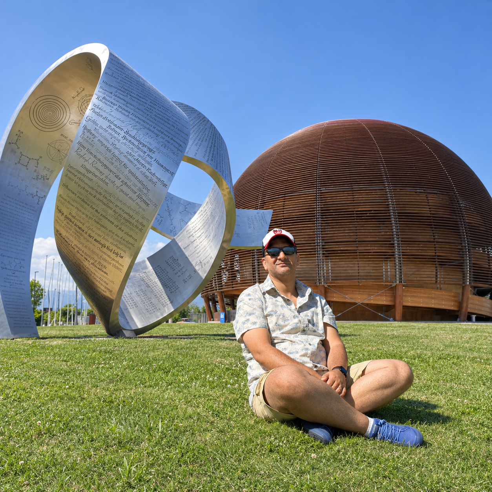

I.
Horizons & thermodynamics
Black-hole phase transitions, stability and microstructure through generalized and nonextensive entropies, with particular emphasis on Rényi statistics.
Theoretical physics · Gravitation
Full Professor · Ibn Zohr University
Exploring black holes, the thermodynamics of spacetime, and the observational signatures of strong gravity.

Laboratory of Theoretical and High Energy Physics · LPTHE
Discover more01About
I am a theoretical physicist and Full Professor at the Faculty of Sciences, Ibn Zohr University in Agadir, Morocco.
My research focuses on black-hole thermodynamics, generalized entropy and strong-gravity phenomenology. I combine analytical modelling and numerical methods to study phase structure, light propagation and particle dynamics around compact objects.
Alongside research, I teach physics at undergraduate and graduate levels and supervise doctoral work in gravitation and high-energy physics.
Habilitation to supervise research in high-energy physics, Ibn Zohr University.
PhD in high-energy physics, Cadi Ayyad University. Research on string theory, black holes and conformal theories.
Academic record: ORCID ↗
02Research directions
Understanding the links between geometry, thermodynamics and what we can observe.
Black-hole phase transitions, stability and microstructure through generalized and nonextensive entropies, with particular emphasis on Rényi statistics.
Light propagation, gravitational lensing and black-hole shadows as ways to compare spacetime models with observations of compact objects.
Charged-particle motion and oscillations near magnetized black holes, linking theoretical frequency models to quasi-periodic oscillations through Bayesian inference.
Schematic illustrations of research themes.
03Selected work
A thematic selection, rather than an exhaustive bibliography.
Download BibTeX04Enseignement & transmission
Des cours fondamentaux aux premières investigations, un espace pour les étudiants de licence et de master.
Probabilités, espace des phases, ensembles microcanonique, canonique et grand canonique, statistiques quantiques.
Supports, TD et annales — archivesGéométrie de l’espace-temps, équations d’Einstein, solutions de trous noirs et modèles cosmologiques.
Cours et diaporamas — archivesCinématique, dynamique, oscillations et analyse des mesures. Une première ressource interactive permet de travailler le pendule simple.
Explorer le chapitre piloteLes liens d’archives renvoient aux supports déjà diffusés. Pour les consignes et documents de la séance en cours, contactez-moi.
Chapitre 01 · Mécanique
Un pendule, un protocole à concevoir et des données à interpréter. Simulation non linéaire, incertitudes et estimation de g.
Entrer dans le laboratoire Licence S1–S2 · Chapitre pilote05Get in touch
For research discussions, academic collaborations or questions about teaching, you can reach me at my university address.
h.elmoumni@uiz.ac.maDepartment of Physics
Faculty of Sciences
Ibn Zohr University
Agadir, Morocco